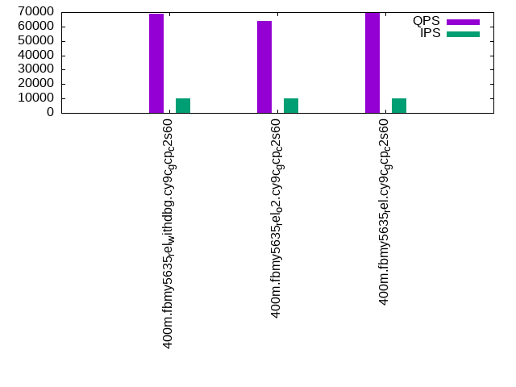

This is a report for the insert benchmark with 400M docs and 20 client(s). It is generated by scripts (bash, awk, sed) and Tufte might not be impressed. An overview of the insert benchmark is here and a short update is here. Below, by DBMS, I mean DBMS+version.config. An example is my8020.c10b40 where my means MySQL, 8020 is version 8.0.20 and c10b40 is the name for the configuration file.
The test server is c2-standard-60 from GCP with 30 cores, hyperthreading disabled, 240G RAM and 3T of NVMe storage. The benchmark was run with 20 clients and there were 1 or 2 connections per client (1 for queries, 1 for inserts). The benchmark loads 400M rows without secondary indexes, creates secondary indexes, loads another 400M rows then does 3 read+write tests for 1800 seconds each that do queries as fast as possible with 100, 500 and then 1000 writes/second/client concurrent with the queries. There was 1 table per client. The database is cached by the storage engine and the only IO is for writes. Clients and the DBMS share one server. The per-database configs are in the per-database subdirectories here.
The tested DBMS are:
The numbers are inserts/s for l.i0 and l.i1, indexed docs (or rows) /s for l.x and queries/s for q*.2. The values are the average rate over the entire test for inserts (IPS) and queries (QPS). The range of values for IPS and QPS is split into 3 parts: bottom 25%, middle 50%, top 25%. Values in the bottom 25% have a red background, values in the top 25% have a green background and values in the middle have no color. A gray background is used for values that can be ignored because the DBMS did not sustain the target insert rate. Red backgrounds are not used when the minimum value is within 80% of the max value.
| dbms | l.i0 | l.x | l.i1 | q100.1 | q500.1 | q1000.1 |
|---|---|---|---|---|---|---|
| 400m.fbmy5635_rel_withdbg.cy9c_gcp_c2s60 | 623053 | 1587698 | 171895 | 69904 | 68980 | 66219 |
| 400m.fbmy5635_rel_o2.cy9c_gcp_c2s60 | 645161 | 1351689 | 174749 | 65012 | 63950 | 62059 |
| 400m.fbmy5635_rel.cy9c_gcp_c2s60 | 652528 | 1600400 | 174825 | 70710 | 69305 | 66862 |
This table has relative throughput, throughput for the DBMS relative to the DBMS in the first line, using the absolute throughput from the previous table.
| dbms | l.i0 | l.x | l.i1 | q100.1 | q500.1 | q1000.1 |
|---|---|---|---|---|---|---|
| 400m.fbmy5635_rel_withdbg.cy9c_gcp_c2s60 | 1.00 | 1.00 | 1.00 | 1.00 | 1.00 | 1.00 |
| 400m.fbmy5635_rel_o2.cy9c_gcp_c2s60 | 1.04 | 0.85 | 1.02 | 0.93 | 0.93 | 0.94 |
| 400m.fbmy5635_rel.cy9c_gcp_c2s60 | 1.05 | 1.01 | 1.02 | 1.01 | 1.00 | 1.01 |
This lists the average rate of inserts/s for the tests that do inserts concurrent with queries. For such tests the query rate is listed in the table above. The read+write tests are setup so that the insert rate should match the target rate every second. Cells that are not at least 95% of the target have a red background to indicate a failure to satisfy the target.
| dbms | q100.1 | q500.1 | q1000.1 |
|---|---|---|---|
| fbmy5635_rel_withdbg.cy9c_gcp_c2s60 | 1976 | 9890 | 19769 |
| fbmy5635_rel_o2.cy9c_gcp_c2s60 | 1976 | 9885 | 19769 |
| fbmy5635_rel.cy9c_gcp_c2s60 | 1976 | 9885 | 19769 |
| target | 2000 | 10000 | 20000 |
l.i0: load without secondary indexes. Graphs for performance per 1-second interval are here.
Average throughput:
Insert response time histogram: each cell has the percentage of responses that take <= the time in the header and max is the max response time in seconds. For the max column values in the top 25% of the range have a red background and in the bottom 25% of the range have a green background. The red background is not used when the min value is within 80% of the max value.
| dbms | 256us | 1ms | 4ms | 16ms | 64ms | 256ms | 1s | 4s | 16s | gt | max |
|---|---|---|---|---|---|---|---|---|---|---|---|
| fbmy5635_rel_withdbg.cy9c_gcp_c2s60 | 4.248 | 86.983 | 8.730 | 0.005 | 0.031 | 0.004 | 0.570 | ||||
| fbmy5635_rel_o2.cy9c_gcp_c2s60 | 3.231 | 91.198 | 5.531 | 0.005 | 0.028 | 0.007 | 0.490 | ||||
| fbmy5635_rel.cy9c_gcp_c2s60 | 4.071 | 90.922 | 4.964 | 0.008 | 0.028 | 0.006 | 0.357 |
Performance metrics for the DBMS listed above. Some are normalized by throughput, others are not. Legend for results is here.
ips qps rps rmbps wps wmbps rpq rkbpq wpi wkbpi csps cpups cspq cpupq dbgb1 dbgb2 rss maxop p50 p99 tag 623053 0 0 0.0 777.9 233.5 0.000 0.000 0.001 0.384 586013 63.3 0.941 30 12.7 13.1 NA 0.570 32465 14389 400m.fbmy5635_rel_withdbg.cy9c_gcp_c2s60 645161 0 0 0.0 811.2 244.4 0.000 0.000 0.001 0.388 599721 63.4 0.930 29 12.6 13.0 NA 0.490 33065 20577 400m.fbmy5635_rel_o2.cy9c_gcp_c2s60 652528 0 0 0.0 825.3 247.0 0.000 0.000 0.001 0.388 593150 63.4 0.909 29 13.1 13.5 NA 0.357 32975 18679 400m.fbmy5635_rel.cy9c_gcp_c2s60
l.x: create secondary indexes.
Average throughput:
Performance metrics for the DBMS listed above. Some are normalized by throughput, others are not. Legend for results is here.
ips qps rps rmbps wps wmbps rpq rkbpq wpi wkbpi csps cpups cspq cpupq dbgb1 dbgb2 rss maxop p50 p99 tag 1587698 0 3 0.2 795.9 230.3 0.000 0.000 0.001 0.149 5402 58.9 0.003 11 27.0 27.4 NA 0.003 NA NA 400m.fbmy5635_rel_withdbg.cy9c_gcp_c2s60 1351689 0 2 0.2 683.6 196.2 0.000 0.000 0.001 0.149 4832 59.7 0.004 13 27.0 27.4 NA 0.008 NA NA 400m.fbmy5635_rel_o2.cy9c_gcp_c2s60 1600400 0 3 0.2 809.9 233.0 0.000 0.000 0.001 0.149 5729 58.4 0.004 11 26.9 27.3 NA 0.003 NA NA 400m.fbmy5635_rel.cy9c_gcp_c2s60
l.i1: continue load after secondary indexes created. Graphs for performance per 1-second interval are here.
Average throughput:
Insert response time histogram: each cell has the percentage of responses that take <= the time in the header and max is the max response time in seconds. For the max column values in the top 25% of the range have a red background and in the bottom 25% of the range have a green background. The red background is not used when the min value is within 80% of the max value.
| dbms | 256us | 1ms | 4ms | 16ms | 64ms | 256ms | 1s | 4s | 16s | gt | max |
|---|---|---|---|---|---|---|---|---|---|---|---|
| fbmy5635_rel_withdbg.cy9c_gcp_c2s60 | 0.112 | 15.785 | 84.026 | 0.057 | 0.015 | 0.005 | 0.399 | ||||
| fbmy5635_rel_o2.cy9c_gcp_c2s60 | 0.124 | 16.262 | 83.577 | 0.017 | 0.019 | 0.001 | 0.362 | ||||
| fbmy5635_rel.cy9c_gcp_c2s60 | 0.172 | 16.186 | 83.604 | 0.018 | 0.017 | 0.003 | 0.380 |
Performance metrics for the DBMS listed above. Some are normalized by throughput, others are not. Legend for results is here.
ips qps rps rmbps wps wmbps rpq rkbpq wpi wkbpi csps cpups cspq cpupq dbgb1 dbgb2 rss maxop p50 p99 tag 171895 0 19 4.1 749.4 222.9 0.000 0.024 0.004 1.328 156386 34.1 0.910 60 64.1 65.6 NA 0.399 8795 6443 400m.fbmy5635_rel_withdbg.cy9c_gcp_c2s60 174749 0 19 4.0 781.5 231.8 0.000 0.024 0.004 1.358 161715 33.5 0.925 58 60.3 61.9 NA 0.362 8795 7042 400m.fbmy5635_rel_o2.cy9c_gcp_c2s60 174825 0 19 4.1 800.7 236.1 0.000 0.024 0.005 1.383 160082 33.7 0.916 58 56.5 58.0 NA 0.380 8793 6793 400m.fbmy5635_rel.cy9c_gcp_c2s60
q100.1: range queries with 100 insert/s per client. Graphs for performance per 1-second interval are here.
Average throughput:
Query response time histogram: each cell has the percentage of responses that take <= the time in the header and max is the max response time in seconds. For max values in the top 25% of the range have a red background and in the bottom 25% of the range have a green background. The red background is not used when the min value is within 80% of the max value.
| dbms | 256us | 1ms | 4ms | 16ms | 64ms | 256ms | 1s | 4s | 16s | gt | max |
|---|---|---|---|---|---|---|---|---|---|---|---|
| fbmy5635_rel_withdbg.cy9c_gcp_c2s60 | 32.211 | 67.785 | 0.003 | 0.001 | nonzero | 0.035 | |||||
| fbmy5635_rel_o2.cy9c_gcp_c2s60 | 9.994 | 89.999 | 0.006 | 0.001 | nonzero | 0.038 | |||||
| fbmy5635_rel.cy9c_gcp_c2s60 | 34.608 | 65.388 | 0.003 | 0.001 | nonzero | 0.031 |
Insert response time histogram: each cell has the percentage of responses that take <= the time in the header and max is the max response time in seconds. For max values in the top 25% of the range have a red background and in the bottom 25% of the range have a green background. The red background is not used when the min value is within 80% of the max value.
| dbms | 256us | 1ms | 4ms | 16ms | 64ms | 256ms | 1s | 4s | 16s | gt | max |
|---|---|---|---|---|---|---|---|---|---|---|---|
| fbmy5635_rel_withdbg.cy9c_gcp_c2s60 | 0.271 | 98.610 | 1.111 | 0.008 | 0.026 | ||||||
| fbmy5635_rel_o2.cy9c_gcp_c2s60 | 0.285 | 95.461 | 4.225 | 0.029 | 0.036 | ||||||
| fbmy5635_rel.cy9c_gcp_c2s60 | 0.546 | 98.186 | 1.268 | 0.009 |
Performance metrics for the DBMS listed above. Some are normalized by throughput, others are not. Legend for results is here.
ips qps rps rmbps wps wmbps rpq rkbpq wpi wkbpi csps cpups cspq cpupq dbgb1 dbgb2 rss maxop p50 p99 tag 1976 69904 0 0.0 30.4 8.8 0.000 0.000 0.015 4.565 293658 65.0 4.201 279 56.2 58.2 NA 0.035 3548 2638 400m.fbmy5635_rel_withdbg.cy9c_gcp_c2s60 1976 65012 0 0.0 29.1 8.4 0.000 0.000 0.015 4.359 273142 64.9 4.201 299 56.2 58.1 NA 0.038 3244 2942 400m.fbmy5635_rel_o2.cy9c_gcp_c2s60 1976 70710 0 0.0 18.8 5.1 0.000 0.000 0.010 2.617 295340 64.8 4.177 275 56.2 58.1 NA 0.031 3566 3069 400m.fbmy5635_rel.cy9c_gcp_c2s60
q500.1: range queries with 500 insert/s per client. Graphs for performance per 1-second interval are here.
Average throughput:
Query response time histogram: each cell has the percentage of responses that take <= the time in the header and max is the max response time in seconds. For max values in the top 25% of the range have a red background and in the bottom 25% of the range have a green background. The red background is not used when the min value is within 80% of the max value.
| dbms | 256us | 1ms | 4ms | 16ms | 64ms | 256ms | 1s | 4s | 16s | gt | max |
|---|---|---|---|---|---|---|---|---|---|---|---|
| fbmy5635_rel_withdbg.cy9c_gcp_c2s60 | 25.876 | 74.088 | 0.034 | 0.001 | 0.001 | 0.040 | |||||
| fbmy5635_rel_o2.cy9c_gcp_c2s60 | 7.374 | 92.585 | 0.039 | 0.001 | 0.001 | 0.039 | |||||
| fbmy5635_rel.cy9c_gcp_c2s60 | 27.753 | 72.213 | 0.033 | 0.001 | 0.001 | 0.041 |
Insert response time histogram: each cell has the percentage of responses that take <= the time in the header and max is the max response time in seconds. For max values in the top 25% of the range have a red background and in the bottom 25% of the range have a green background. The red background is not used when the min value is within 80% of the max value.
| dbms | 256us | 1ms | 4ms | 16ms | 64ms | 256ms | 1s | 4s | 16s | gt | max |
|---|---|---|---|---|---|---|---|---|---|---|---|
| fbmy5635_rel_withdbg.cy9c_gcp_c2s60 | 0.026 | 14.904 | 84.595 | 0.473 | 0.002 | 0.103 | |||||
| fbmy5635_rel_o2.cy9c_gcp_c2s60 | 0.045 | 16.896 | 82.681 | 0.377 | 0.045 | ||||||
| fbmy5635_rel.cy9c_gcp_c2s60 | 0.057 | 15.678 | 83.859 | 0.402 | 0.004 | 0.128 |
Performance metrics for the DBMS listed above. Some are normalized by throughput, others are not. Legend for results is here.
ips qps rps rmbps wps wmbps rpq rkbpq wpi wkbpi csps cpups cspq cpupq dbgb1 dbgb2 rss maxop p50 p99 tag 9890 68980 0 0.0 61.6 18.0 0.000 0.000 0.006 1.862 283372 66.1 4.108 287 57.4 57.7 NA 0.040 3452 3101 400m.fbmy5635_rel_withdbg.cy9c_gcp_c2s60 9885 63950 0 0.0 61.2 17.9 0.000 0.000 0.006 1.850 263448 65.9 4.120 309 57.4 57.7 NA 0.039 3212 2942 400m.fbmy5635_rel_o2.cy9c_gcp_c2s60 9885 69305 0 0.0 63.1 18.5 0.000 0.000 0.006 1.912 284508 66.0 4.105 286 57.4 57.6 NA 0.041 3516 3212 400m.fbmy5635_rel.cy9c_gcp_c2s60
q1000.1: range queries with 1000 insert/s per client. Graphs for performance per 1-second interval are here.
Average throughput:
Query response time histogram: each cell has the percentage of responses that take <= the time in the header and max is the max response time in seconds. For max values in the top 25% of the range have a red background and in the bottom 25% of the range have a green background. The red background is not used when the min value is within 80% of the max value.
| dbms | 256us | 1ms | 4ms | 16ms | 64ms | 256ms | 1s | 4s | 16s | gt | max |
|---|---|---|---|---|---|---|---|---|---|---|---|
| fbmy5635_rel_withdbg.cy9c_gcp_c2s60 | 16.303 | 83.638 | 0.058 | 0.001 | nonzero | 0.054 | |||||
| fbmy5635_rel_o2.cy9c_gcp_c2s60 | 4.498 | 95.434 | 0.067 | 0.001 | nonzero | 0.053 | |||||
| fbmy5635_rel.cy9c_gcp_c2s60 | 18.876 | 81.068 | 0.056 | 0.001 | nonzero | 0.038 |
Insert response time histogram: each cell has the percentage of responses that take <= the time in the header and max is the max response time in seconds. For max values in the top 25% of the range have a red background and in the bottom 25% of the range have a green background. The red background is not used when the min value is within 80% of the max value.
| dbms | 256us | 1ms | 4ms | 16ms | 64ms | 256ms | 1s | 4s | 16s | gt | max |
|---|---|---|---|---|---|---|---|---|---|---|---|
| fbmy5635_rel_withdbg.cy9c_gcp_c2s60 | 0.053 | 24.187 | 75.373 | 0.387 | 0.034 | ||||||
| fbmy5635_rel_o2.cy9c_gcp_c2s60 | 0.100 | 25.243 | 74.397 | 0.260 | 0.033 | ||||||
| fbmy5635_rel.cy9c_gcp_c2s60 | 0.077 | 25.608 | 73.993 | 0.321 | 0.034 |
Performance metrics for the DBMS listed above. Some are normalized by throughput, others are not. Legend for results is here.
ips qps rps rmbps wps wmbps rpq rkbpq wpi wkbpi csps cpups cspq cpupq dbgb1 dbgb2 rss maxop p50 p99 tag 19769 66219 0 0.0 118.9 35.6 0.000 0.000 0.006 1.842 266215 68.0 4.020 308 60.0 60.9 NA 0.054 3340 3053 400m.fbmy5635_rel_withdbg.cy9c_gcp_c2s60 19769 62059 0 0.0 115.4 33.7 0.000 0.000 0.006 1.746 251422 67.8 4.051 328 60.0 60.8 NA 0.053 3133 2891 400m.fbmy5635_rel_o2.cy9c_gcp_c2s60 19769 66862 0 0.0 116.1 34.1 0.000 0.000 0.006 1.765 269484 67.8 4.030 304 60.1 61.0 NA 0.038 3373 3053 400m.fbmy5635_rel.cy9c_gcp_c2s60
l.i0: load without secondary indexes
Performance metrics for all DBMS, not just the ones listed above. Some are normalized by throughput, others are not. Legend for results is here.
ips qps rps rmbps wps wmbps rpq rkbpq wpi wkbpi csps cpups cspq cpupq dbgb1 dbgb2 rss maxop p50 p99 tag 623053 0 0 0.0 777.9 233.5 0.000 0.000 0.001 0.384 586013 63.3 0.941 30 12.7 13.1 NA 0.570 32465 14389 400m.fbmy5635_rel_withdbg.cy9c_gcp_c2s60 645161 0 0 0.0 811.2 244.4 0.000 0.000 0.001 0.388 599721 63.4 0.930 29 12.6 13.0 NA 0.490 33065 20577 400m.fbmy5635_rel_o2.cy9c_gcp_c2s60 652528 0 0 0.0 825.3 247.0 0.000 0.000 0.001 0.388 593150 63.4 0.909 29 13.1 13.5 NA 0.357 32975 18679 400m.fbmy5635_rel.cy9c_gcp_c2s60
l.x: create secondary indexes
Performance metrics for all DBMS, not just the ones listed above. Some are normalized by throughput, others are not. Legend for results is here.
ips qps rps rmbps wps wmbps rpq rkbpq wpi wkbpi csps cpups cspq cpupq dbgb1 dbgb2 rss maxop p50 p99 tag 1587698 0 3 0.2 795.9 230.3 0.000 0.000 0.001 0.149 5402 58.9 0.003 11 27.0 27.4 NA 0.003 NA NA 400m.fbmy5635_rel_withdbg.cy9c_gcp_c2s60 1351689 0 2 0.2 683.6 196.2 0.000 0.000 0.001 0.149 4832 59.7 0.004 13 27.0 27.4 NA 0.008 NA NA 400m.fbmy5635_rel_o2.cy9c_gcp_c2s60 1600400 0 3 0.2 809.9 233.0 0.000 0.000 0.001 0.149 5729 58.4 0.004 11 26.9 27.3 NA 0.003 NA NA 400m.fbmy5635_rel.cy9c_gcp_c2s60
l.i1: continue load after secondary indexes created
Performance metrics for all DBMS, not just the ones listed above. Some are normalized by throughput, others are not. Legend for results is here.
ips qps rps rmbps wps wmbps rpq rkbpq wpi wkbpi csps cpups cspq cpupq dbgb1 dbgb2 rss maxop p50 p99 tag 171895 0 19 4.1 749.4 222.9 0.000 0.024 0.004 1.328 156386 34.1 0.910 60 64.1 65.6 NA 0.399 8795 6443 400m.fbmy5635_rel_withdbg.cy9c_gcp_c2s60 174749 0 19 4.0 781.5 231.8 0.000 0.024 0.004 1.358 161715 33.5 0.925 58 60.3 61.9 NA 0.362 8795 7042 400m.fbmy5635_rel_o2.cy9c_gcp_c2s60 174825 0 19 4.1 800.7 236.1 0.000 0.024 0.005 1.383 160082 33.7 0.916 58 56.5 58.0 NA 0.380 8793 6793 400m.fbmy5635_rel.cy9c_gcp_c2s60
q100.1: range queries with 100 insert/s per client
Performance metrics for all DBMS, not just the ones listed above. Some are normalized by throughput, others are not. Legend for results is here.
ips qps rps rmbps wps wmbps rpq rkbpq wpi wkbpi csps cpups cspq cpupq dbgb1 dbgb2 rss maxop p50 p99 tag 1976 69904 0 0.0 30.4 8.8 0.000 0.000 0.015 4.565 293658 65.0 4.201 279 56.2 58.2 NA 0.035 3548 2638 400m.fbmy5635_rel_withdbg.cy9c_gcp_c2s60 1976 65012 0 0.0 29.1 8.4 0.000 0.000 0.015 4.359 273142 64.9 4.201 299 56.2 58.1 NA 0.038 3244 2942 400m.fbmy5635_rel_o2.cy9c_gcp_c2s60 1976 70710 0 0.0 18.8 5.1 0.000 0.000 0.010 2.617 295340 64.8 4.177 275 56.2 58.1 NA 0.031 3566 3069 400m.fbmy5635_rel.cy9c_gcp_c2s60
q500.1: range queries with 500 insert/s per client
Performance metrics for all DBMS, not just the ones listed above. Some are normalized by throughput, others are not. Legend for results is here.
ips qps rps rmbps wps wmbps rpq rkbpq wpi wkbpi csps cpups cspq cpupq dbgb1 dbgb2 rss maxop p50 p99 tag 9890 68980 0 0.0 61.6 18.0 0.000 0.000 0.006 1.862 283372 66.1 4.108 287 57.4 57.7 NA 0.040 3452 3101 400m.fbmy5635_rel_withdbg.cy9c_gcp_c2s60 9885 63950 0 0.0 61.2 17.9 0.000 0.000 0.006 1.850 263448 65.9 4.120 309 57.4 57.7 NA 0.039 3212 2942 400m.fbmy5635_rel_o2.cy9c_gcp_c2s60 9885 69305 0 0.0 63.1 18.5 0.000 0.000 0.006 1.912 284508 66.0 4.105 286 57.4 57.6 NA 0.041 3516 3212 400m.fbmy5635_rel.cy9c_gcp_c2s60
q1000.1: range queries with 1000 insert/s per client
Performance metrics for all DBMS, not just the ones listed above. Some are normalized by throughput, others are not. Legend for results is here.
ips qps rps rmbps wps wmbps rpq rkbpq wpi wkbpi csps cpups cspq cpupq dbgb1 dbgb2 rss maxop p50 p99 tag 19769 66219 0 0.0 118.9 35.6 0.000 0.000 0.006 1.842 266215 68.0 4.020 308 60.0 60.9 NA 0.054 3340 3053 400m.fbmy5635_rel_withdbg.cy9c_gcp_c2s60 19769 62059 0 0.0 115.4 33.7 0.000 0.000 0.006 1.746 251422 67.8 4.051 328 60.0 60.8 NA 0.053 3133 2891 400m.fbmy5635_rel_o2.cy9c_gcp_c2s60 19769 66862 0 0.0 116.1 34.1 0.000 0.000 0.006 1.765 269484 67.8 4.030 304 60.1 61.0 NA 0.038 3373 3053 400m.fbmy5635_rel.cy9c_gcp_c2s60
Insert response time histogram
256us 1ms 4ms 16ms 64ms 256ms 1s 4s 16s gt max tag 0.000 4.248 86.983 8.730 0.005 0.031 0.004 0.000 0.000 0.000 0.570 fbmy5635_rel_withdbg.cy9c_gcp_c2s60 0.000 3.231 91.198 5.531 0.005 0.028 0.007 0.000 0.000 0.000 0.490 fbmy5635_rel_o2.cy9c_gcp_c2s60 0.000 4.071 90.922 4.964 0.008 0.028 0.006 0.000 0.000 0.000 0.357 fbmy5635_rel.cy9c_gcp_c2s60
TODO - determine whether there is data for create index response time
Insert response time histogram
256us 1ms 4ms 16ms 64ms 256ms 1s 4s 16s gt max tag 0.000 0.112 15.785 84.026 0.057 0.015 0.005 0.000 0.000 0.000 0.399 fbmy5635_rel_withdbg.cy9c_gcp_c2s60 0.000 0.124 16.262 83.577 0.017 0.019 0.001 0.000 0.000 0.000 0.362 fbmy5635_rel_o2.cy9c_gcp_c2s60 0.000 0.172 16.186 83.604 0.018 0.017 0.003 0.000 0.000 0.000 0.380 fbmy5635_rel.cy9c_gcp_c2s60
Query response time histogram
256us 1ms 4ms 16ms 64ms 256ms 1s 4s 16s gt max tag 32.211 67.785 0.003 0.001 nonzero 0.000 0.000 0.000 0.000 0.000 0.035 fbmy5635_rel_withdbg.cy9c_gcp_c2s60 9.994 89.999 0.006 0.001 nonzero 0.000 0.000 0.000 0.000 0.000 0.038 fbmy5635_rel_o2.cy9c_gcp_c2s60 34.608 65.388 0.003 0.001 nonzero 0.000 0.000 0.000 0.000 0.000 0.031 fbmy5635_rel.cy9c_gcp_c2s60
Insert response time histogram
256us 1ms 4ms 16ms 64ms 256ms 1s 4s 16s gt max tag 0.000 0.271 98.610 1.111 0.008 0.000 0.000 0.000 0.000 0.000 0.026 fbmy5635_rel_withdbg.cy9c_gcp_c2s60 0.000 0.285 95.461 4.225 0.029 0.000 0.000 0.000 0.000 0.000 0.036 fbmy5635_rel_o2.cy9c_gcp_c2s60 0.000 0.546 98.186 1.268 0.000 0.000 0.000 0.000 0.000 0.000 0.009 fbmy5635_rel.cy9c_gcp_c2s60
Query response time histogram
256us 1ms 4ms 16ms 64ms 256ms 1s 4s 16s gt max tag 25.876 74.088 0.034 0.001 0.001 0.000 0.000 0.000 0.000 0.000 0.040 fbmy5635_rel_withdbg.cy9c_gcp_c2s60 7.374 92.585 0.039 0.001 0.001 0.000 0.000 0.000 0.000 0.000 0.039 fbmy5635_rel_o2.cy9c_gcp_c2s60 27.753 72.213 0.033 0.001 0.001 0.000 0.000 0.000 0.000 0.000 0.041 fbmy5635_rel.cy9c_gcp_c2s60
Insert response time histogram
256us 1ms 4ms 16ms 64ms 256ms 1s 4s 16s gt max tag 0.000 0.026 14.904 84.595 0.473 0.002 0.000 0.000 0.000 0.000 0.103 fbmy5635_rel_withdbg.cy9c_gcp_c2s60 0.000 0.045 16.896 82.681 0.377 0.000 0.000 0.000 0.000 0.000 0.045 fbmy5635_rel_o2.cy9c_gcp_c2s60 0.000 0.057 15.678 83.859 0.402 0.004 0.000 0.000 0.000 0.000 0.128 fbmy5635_rel.cy9c_gcp_c2s60
Query response time histogram
256us 1ms 4ms 16ms 64ms 256ms 1s 4s 16s gt max tag 16.303 83.638 0.058 0.001 nonzero 0.000 0.000 0.000 0.000 0.000 0.054 fbmy5635_rel_withdbg.cy9c_gcp_c2s60 4.498 95.434 0.067 0.001 nonzero 0.000 0.000 0.000 0.000 0.000 0.053 fbmy5635_rel_o2.cy9c_gcp_c2s60 18.876 81.068 0.056 0.001 nonzero 0.000 0.000 0.000 0.000 0.000 0.038 fbmy5635_rel.cy9c_gcp_c2s60
Insert response time histogram
256us 1ms 4ms 16ms 64ms 256ms 1s 4s 16s gt max tag 0.000 0.053 24.187 75.373 0.387 0.000 0.000 0.000 0.000 0.000 0.034 fbmy5635_rel_withdbg.cy9c_gcp_c2s60 0.000 0.100 25.243 74.397 0.260 0.000 0.000 0.000 0.000 0.000 0.033 fbmy5635_rel_o2.cy9c_gcp_c2s60 0.000 0.077 25.608 73.993 0.321 0.000 0.000 0.000 0.000 0.000 0.034 fbmy5635_rel.cy9c_gcp_c2s60